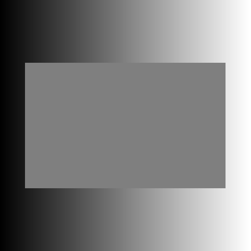

Write a program using dudraw to replicate any one of the optical illusions shown below (you choose). [Note to instructors: this can be modified to any language using most options for graphics packages.] Modify the image in some way to make the image distinct from what is shown below (change colors, number of lines, thickness of lines, or any other modifications)
Submit the project with the usual naming conventions for your file and the usual requirements for documentation (docstrings, comments and variable names).
The background here is drawn with a gradient of gray colors ranging from a brightness of 0 to 255. But the rectangle in the middle is one rectangle of a mid-intensity gray, it does not have a color change in it!
The following three choices may require trigonometry. In python, the math.cos() and math.sin() functions accept the angle in radians as a parameter. The radiating lines are drawn from the center outwards are spaced with a constant angle between them.